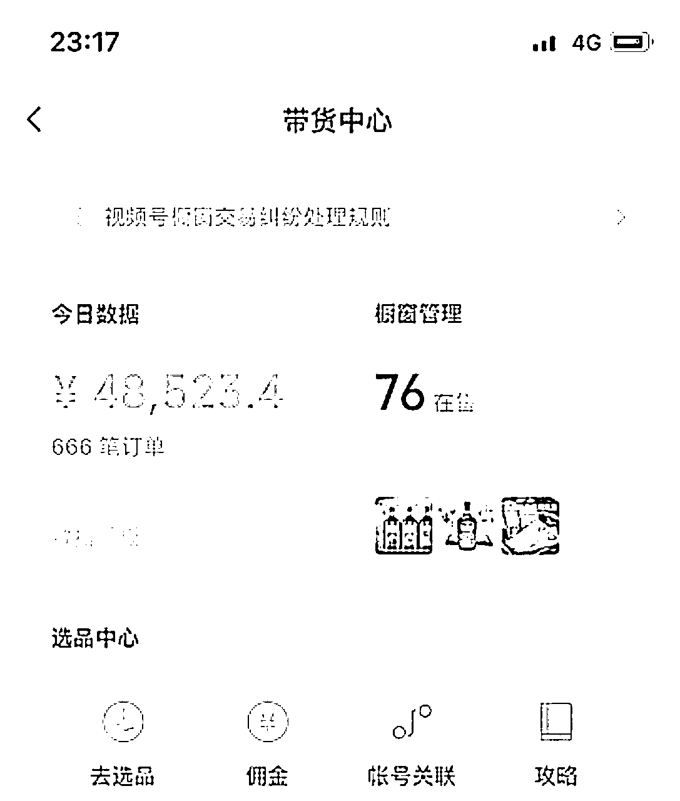
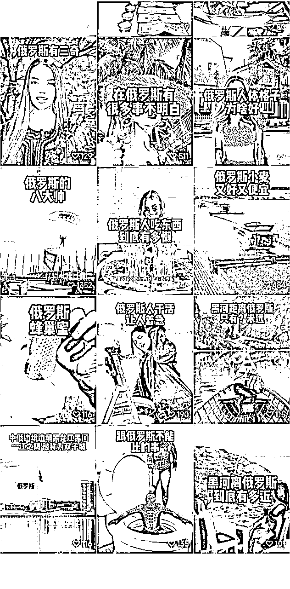
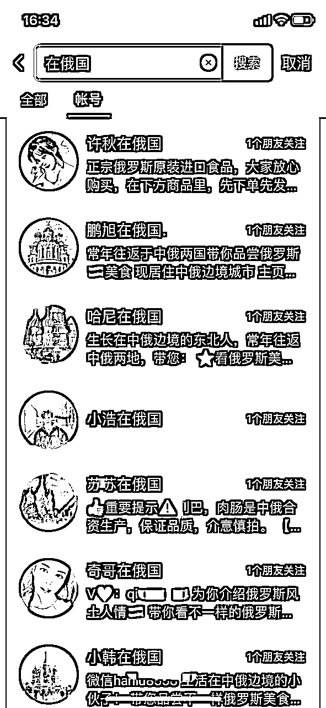
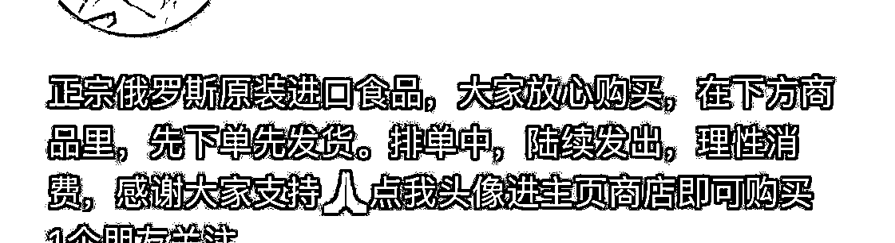
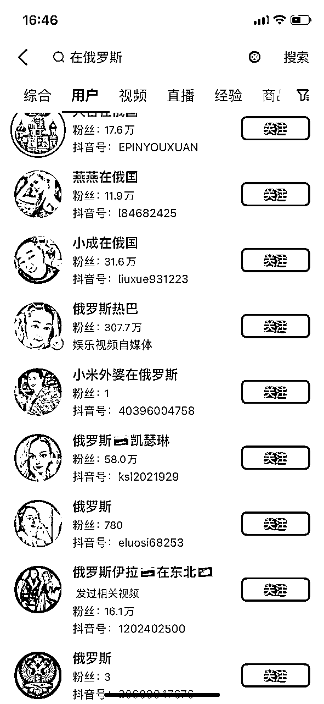
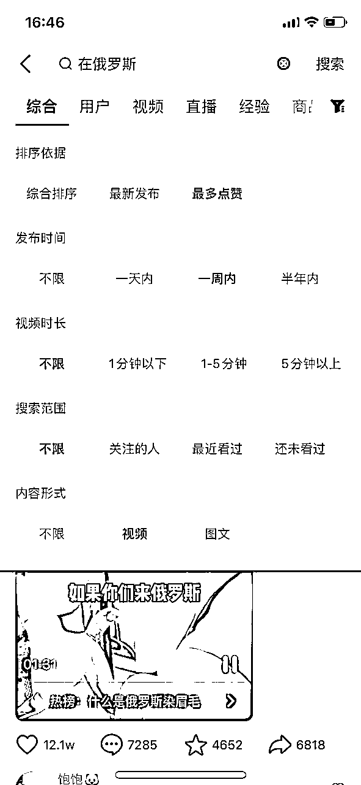
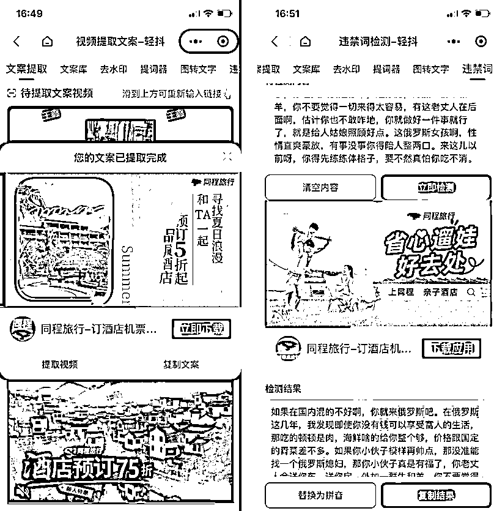
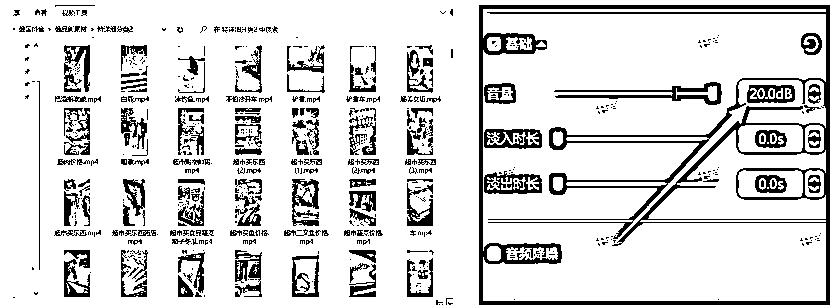

来源：https://mfiqr7xako.feishu.cn/docx/H8Tvd3iZOomU4AxMBUzcxX2nnih
挖掘蓝海项目，在抖音，视频号卖俄罗斯食品，如何踩中风口，日入10万
大家好，我是小沐。
高中开始接触互联网，在虚拟产品和知识付费专研了6年的玩家。
俄罗斯食品是我们做了3年的项目，也是我首次分享这个项目。
今天，将这个项目从发现需求、挣到钱，再放大到六位数的全过程。以及我的思考、实操细节，真诚、毫无保留地分享给大家，也是我对这个项目的一次全面复盘。
我一个朋友跟我说。他有个好项目，给我看了数据图，看到的第一眼，我就知道，这是个很值得做的项目！
刚开始我们在抖音做，这时候俄品还属于蓝海项目，单号每天能稳定几千。
2022年初，视频号流量机制的变化，我们意识到红利来了，而且视频号中老年人居多，所以开始转战视频号，通过视频带货及直播带货。
可以说我们是很早做视频号带货的那一批了。
发第一条作品直接爆几十万播放，几百万播放的也很多。两天就赚了3万佣金
后边加上俄w 那件事，天时地利人和。尤其是视频号直播，两个小时就赚了10万。

简单来说就是通过剪辑俄罗斯的实拍素材，展示俄罗斯的美食，进行带货。
这种类型的号只要每天发布1-3个作品，很容易起号，同时视频表现形式也能快速吸用户眼光。

××俄品 ××在俄国 这样的网名，如：小美在俄国。
或者用俄罗斯零食铺这样更官方的名字。

我们找些俄罗斯美女，建筑的图片就可以了。
可以百度搜索，如下图:
十年俄品臻选，下方商品自动下单威：xxxxx

我们把头像简介和个人信息完善好之后可以先放一天，找爆款作品。
我们做任何项目前，首先要找对标同行。
我们在搜索关键词，找那些粉丝数比较少，而且是一直在更新的账号。
然后再在他的视频中筛选点赞，评论，收藏比较高作品进行模仿。

我们搜索关键词，然后我们进行筛选，最多点赞，一周内或者一天内，视频形式。
我们点开那些点赞，评论，收藏比较高作品之后，看看账号的起号时间和粉丝数
如果起号时间比较短并且粉丝数比较少那我们找可以模仿他的这个爆款。

制作视频我们去轻抖提取一下所选爆款作品的文案，将文案进行适当修改一下。
然后将修改好的文案进行一下违规词的检测，把违规词用拼音代替一下，然后进行配音，配好音之后配视频。

我们去俄罗斯的素材库，文案中是什么样子的关键词，我们就直接去素材库中搜索，视频有了，配音有了，将这些素材导入剪映，配音的音量拉到最高。

关于选品这块，俄罗斯的食品很多，但最热门的几个经典款就是大列巴，蜂蜜，奶粉，牛筋肠，巧克力零食。
如果做抖音带货的话，选择性会更多。我们当时有个朋友专门卖虎酒的，单视频挂车，每天佣金就有1000-2000
下一步就要配字幕了，点智能识别字幕，字体缩放这里调到170%，这样字幕也做好了。
接下来再给这条视频配一个热门的背景音乐，调整一下音量直接导出就可以啦。
视频做好了，接下来就要发布了。
视频号对Ip的敏感性是非常高的，所以大家在视频号发视频的时候，最好是在电脑定时发布，在手机发布最好是用流量，不要一个手机操作两个账号。
每天发3-5个，最好是在直播之前的3-5个小时内发，一个小时发一个，等到直播的时候如果作品爆了，能给直播间带去不少流量。
变现的方式无非挂商品，直播带货，引流到私域，这三个方式。
可以主页引导下购买或者视频挂车
商品挂好了，那接下来就开始直播了。
直播也是一波三折，踩的坑比走的路都多。 直播前一二三四天都没有什么进展，场观一直在八九十徘徊，破不了百。
这让我很苦恼，后来发现了一个秘诀，视频和直播是互相成就的。
如果你直播能把流量做起来，那你的视频播放肯定也会有所突破；如果你的视频爆了，那你的直播肯定差不了事。
(时间太长了，图片有点糊)
参考视频号同行爆款视频，他发什么我们就发什么，他这个视频能爆那就说明这个视频在视频号有流量并且受众群体很多。
那我们直接去抖音搜索这个视频，关键词查找一般都能找出来。
然后在轻抖去水印，提取文案，查违禁词。
再将去完水印的视频进行二次创作也就是加画中画，倍数，加特效，加滤镜，加字幕，加音频，加背景音乐，经过我们对视频的不断优化，播放量差不了。
直播前期可以发个福袋，留住观众。
你可以利用这个机会将你的观众引流到私域，也是很不错的。
然后就是加点视频号互助群，或者刷点假人，保证在线人数和人均在线时长。现在更简单了，直接拿钱投流就可以。
现在有商家激励政策，如果你的直播做得好会给你流量券，用这个流量券可以达到和投流一样的效果。如果你的直播违规了在处罚期，那么这个流量券是用不了的。
一般这个流量券有效期是七天，那如果我违规了限流一周，那我这个流量券不是白费了吗？
现在我教你一招，在你限流期间，可以直播一次，直播的时候把你全部的流量券叠加起来给你的直播投流，他会显示投流失败
然后投流失败的这些叠加的流量券，就重新给你发放成一个总的流量券，有效期还是七天，不过有效起始时间就变成了当天。
按上面这几种方法，我的单个视频也经常会有大几十万的播放量，场观也能达到3000。巅峰时刻一场直播销售额曾突破7w
直播模式现在分四种：无人直播，半无人直播，有人直播，暂停直播。
无人直播在视频号现在不好做，我直播封了两次全是因为无人直播，放时钟，不断晃动手机都行不通。
卖视频的话可以买转盘，转盘上放上视频，再加个闹钟，这个方式相对比较稳。
半无人直播有两种形式，一种是图片加小头像，另一种是视频加小头像。
图片加小头像很简单，图片上放上一些关键内容，再把摄像头拉小就行了。
视频加小头像有点麻烦，我做的是俄罗斯食品，那么我就得找俄罗斯超市的相关视频，还要把我的产品类别和金额列出来，最后加个小头像。
我就用我自己做案例拆解，做超市视频，首先要保证你的这个视频不能和别人的重复度过高，跟发布视频一个原理。
视频去抖音找，找几十条视频，总时长在20-30分钟，越长越好。然后自己剪辑一下，也就是二次剪辑，这里不再说明，上面有提到。
然后把剪辑好的视频导入obs，在obs里面进行产品类别以及金额的滚动。直播是开启虚拟摄像头就可以了。
有人直播的话就是真人全屏出镜，如果这种要是做带货的话，最好能拿到样品，单纯在镜头前给大家介绍没有说服力。
其实这种玩法效果是最好的。
这是我发现的新玩法，直播的时候，去淘宝做个宣传图，然后再把你卖的东西在图上添加文本打上去，直播的时候就放一张图，摄像头一关，音频一关，再放首歌，把商品挂上，把讲解点出来
然后等开始上人的时候你就暂停直播，（如果人还没上人就暂停直播后面就不会进人了，太晚暂停直播会违规）等待的时候不要超过十分钟，没暂停之前属于无人直播，无人直播超过十分钟就封
这是前段时间测试出来的，现在是否更严了还不得知。
所以等一上人就立马暂停，在等待上人的期间你可以发个福袋，留住观众。
暂停之后你就不用管了，一直挂着就可以。但如果中途换网络就会强制结束直播，这时候会显示直播结束，但是你点开你的主页还会显示你正在直播，你点进去之后这就算又续上了。
俄品去年很火爆。哪怕现在，做直播的人还是蛮多的，不管是在视频号还是抖音。
俄品的内容形式还是很新奇的，流量大，擅长直播的伙伴可以入手试试。
视频的话，更适合新手，做视频号一定要重视“热点”
可以偶尔蹭热点，带动视频与直播。
转战视频号的时候可以说是蛮艰辛的。
因为当时年初，圈内做视频号的没有几个，基本找不到，就算有，也是闷声发大财，没有任何可以参考的资料。
很多方法都是自己和团队的人慢慢摸索出来的。
最常见的就是视频违规问题，无人直播容易违规，还有直播间流量太泛。新手的话去直播会有点困难。
小白最好先从视频入手最好，这也是最简单的。
想要找到一个好项目，抓住风口，还是要多观察，思考。小众细分领域的蓝海项目，里面藏着巨大的宝藏。
希望写下的这篇能对圈友有所帮助！
大家一起成长！